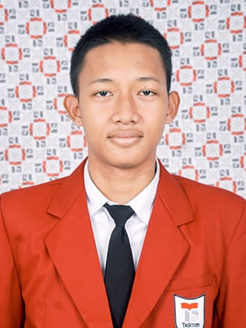

Seorang pengembang web yang bersemangat menciptakan tampilan dan pengalaman pengguna yang menarik. Saya menyukai dunia teknologi dan terus belajar hal-hal baru setiap harinya.
Hire meHalo! Saya seorang pengembang web yang menciptakan tampilan dan pengalaman pengguna yang modern, interaktif, dan estetis. Ketertarikan saya pada dunia teknologi membuat saya terus belajar hal-hal baru setiap hari, mulai dari eksplorasi teknologi backend hingga memahami tren terbaru dalam desain dan pengembangan web. Saya menikmati proses membangun antarmuka yang responsif dan intuitif, serta memastikan setiap detail visual dan fungsional bekerja secara optimal. Saya terus berupaya memperkuat kemampuan teknis, meningkatkan kreativitas, dan beradaptasi dengan lingkungan kerja yang dinamis agar dapat memberikan hasil terbaik pada setiap proyek yang saya kerjakan.
Selengkapnya